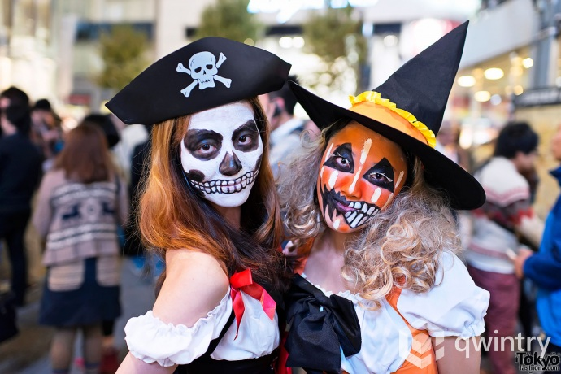
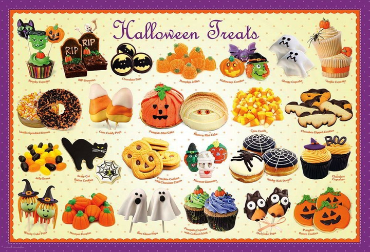
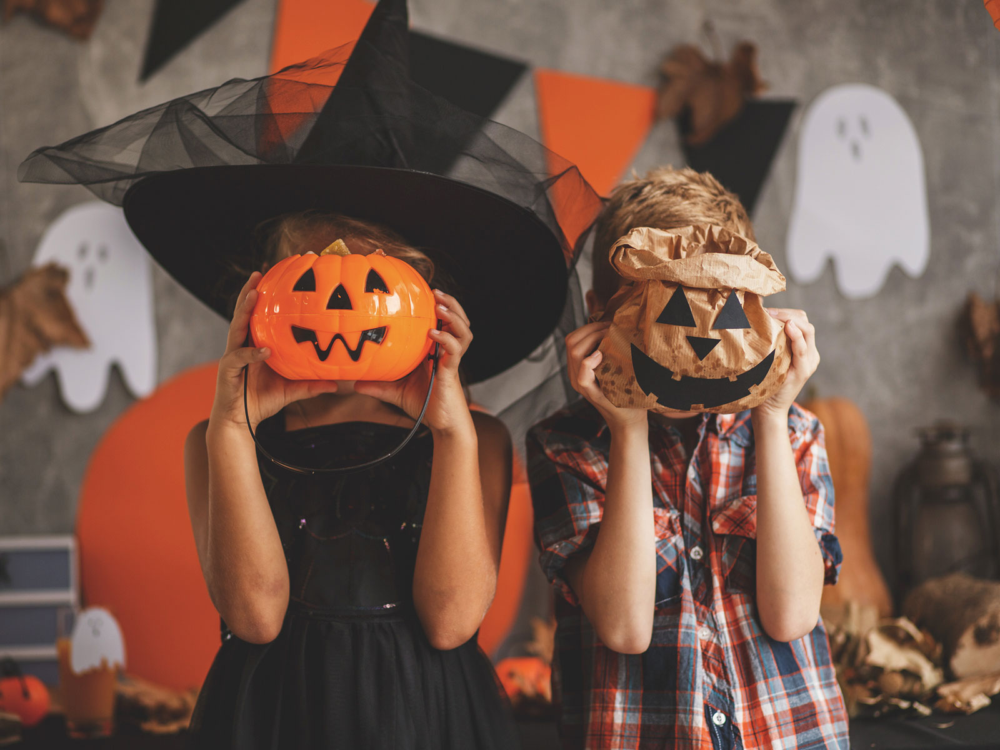
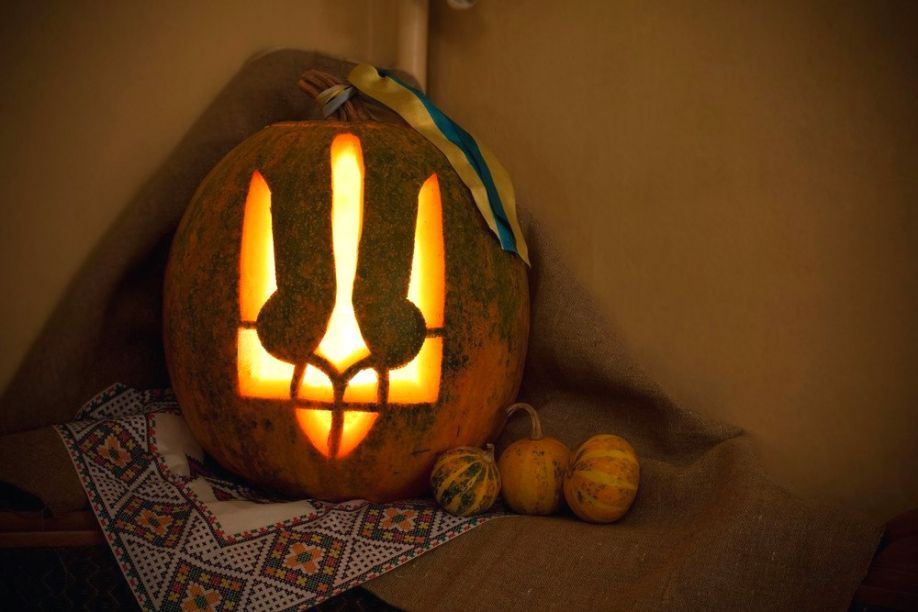

Як відсвяткувати Хелловін - ідеї, прикраси, частування, наряди
Хеллоуїн традиційно святкується в ніч з 31 жовтня на 1 листопада напередодні Дня Всіх Святих. Історія свята сягає кельтським традиціям, і в часи язичництва він мав лише сільськогосподарське і сезонне значення, однак з прийняттям християнства хелловін став міцно асоціюватися з усім надприродним, жахливим, потойбічним.
Декор
Щоб якимось чином надати своїй оселі вигляду of a haunted mansion (тобто будинку з привидами) вам буде потрібно всього-на-всього трохи марлі або бинтів, червона фарба та флізелін, а також трошки фантазії. А я вам підкину ще декілька цікавих ідей.
- Можна зробити «справжню» павутину. Для цього вам знадобиться лише чорна шерстяна нитка. Дуже ефектно буде виглядати у павутинці і павучок. Якщо ж за павутиною поставити настільну лампу чи мерехтливий ліхтарик – ефект присутності забезпечено.
- Також можна використати декілька невеличких яблук замість підсвічників, заздалегідь вирізавши серцевину. Але переконайтеся, що яблука достатньо стійкі і не перевертаються під вагою свічки.
- Щоб прикрасити святковий стіл можна використати широкі тарілки або вази заповнені сухими квітами та листям та висохлими гілочками. Обв’яжіть кожну вазочку чорною стрічкою – і стіл до Хеловіну готовий.
Костюм
Тут можна розгулятися не на жарт. Напевно, не варто розповідати, що найбільш традиційними вважаються костюми всілякої чортівні – вампірів, відьом, чортів, чорних котів, мумій тощо. Ким вам хочеться побути цього року? На це питання може відповісти лише ваша власна уява, вона ж і підкаже, з чого створити костюм. Проте можу дати цікаву пораду нашим модницям: зробіть собі хеловінський манікюр - для цього потрібно лише розмалювати нігті чорним та помаранчевим лаками.
Частування на Хеллоуїн
Купіть мармеладних черв'яків, розкладіть у великі тарілки і розставте їх по всій кімнаті. Також можна зробити "червиві яблучка" - просто купіть великі яблука, акуратно ножем виріжте отвір, у нього - желейного черв'ячка.Гарною ідеєю частування на Хеллоуїн будуть звичайні страви, тільки оформлені в оригінальному хелловінському стилі. Так, можна спекти печиво глазур'ю зробити прикраси у вигляді привидів і різної нечисті. Якщо плануєте нагодувати гостей більш ґрунтовно, оригінально виглядатимуть страви, приготовлені або подані на стіл в гарбузі.
Кіно
Якщо хочеться урізноманітнити вечірку ще й загальним переглядом кіно – це не так важко зробити. До того ж такі фільми краще дивитися разом з друзями, а то ще спати після цього не захочеться. Отож, найкращі фільми для перегляду на Хеловін усіх часів та народів це:
- The Shining
- Halloween
- The Silence of the Lambs
- A Nightmare on Elm Street
- Aliens
- Poltergeist
- Child's Play
- Friday the 13th
- Psycho
Конкурси
Один з найтрадиційніших конкурсів на Хеловін - bobbing for apples – тобто потрібно в величезний таз з водою накидати яблук і потім намагатися виловити їх звідти, не допомагаючи собі руками. Зрозуміло ж, що виловити яблуко можна, лише вкусивши його та добряче намокнувши. Альтернатива цього конкурсу – підвісити яблука на ниточки і намагатися якнайшвидше їх з’їсти, знову ж таки не використовуючи руки.
Пошук міні-гарбузів (можна використати справжні гарбузи або ж роздрукувані на папері). Заховайте міні-гарбузи вдома та запропонуйте своїм гостям знайти їх за певний проміжок часу. Хто знайде найбільшу кількість гарбузиків – отримує приз.
Також веселою розвагою буде створення мумії за допомогою туалетного паперу. Пам’ятайте, що потрібно залишити відкритими ніс, рот та очі «мумії».
Квач-монстр. Дія відбувається в певному обмеженому приміщенні (впевніться, що там немає нічого, через що можна перечепитися). Монстр одягає маску і зав’язує собі очі. Гравці не мають права виходити за визначені межі. Монстр, простягаючи руки вперед, повинен зловити іншого гравця і таким чином вже той стає монстром. Коли монстр стогне, ричить або ж простягає руки, тоді всі гравці мають робити те саме. Лише таким чином монстр може знайти наступну жертву.
Гості
Не забудьте запросити гостей. Але гостей до Хеловіну також потрібно готувати, бо просто прийти – буде недостатньо. По-перше, бажано всім гостям вручити персональні запрошення на вечірку, стилізовані під Хеловін. Отримавши таке запрошення, ніхто не зможе відмовитися від ночі кошмарів. По-друге, донесіть до відома гостей, що вхід дозволено лише в костюмах, і ніяких виключень!!! По-третє, попросіть усіх гостей принести з собою а) цілий гарбузик (можна влаштувати конкурс на найстрашніший jack-o-lantern); б) щось смачненьке; і в) порадьте їм вивчити фразу Trick or Treat! та зробіть її паролем для входу у ваш світ Хеловіну.
